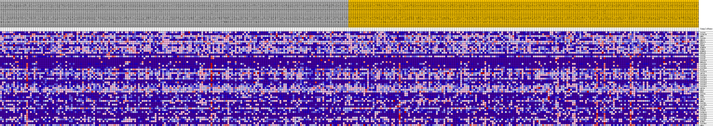
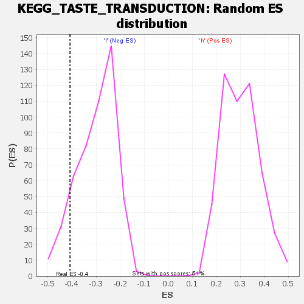

| | | Dataset | VCAN.VCAN.cls#h_versus_l.VCAN.cls#h_versus_l_repos |
| Phenotype | VCAN.cls#h_versus_l_repos |
| Upregulated in class | l |
| GeneSet | KEGG_TASTE_TRANSDUCTION |
| Enrichment Score (ES) | -0.40832195 |
| Normalized Enrichment Score (NES) | -1.3646343 |
| Nominal p-value | 0.11133603 |
| FDR q-value | 1.0 |
| FWER p-Value | 0.91 |
Table: GSEA Results Summary
 Fig 1: Enrichment plot: KEGG_TASTE_TRANSDUCTION
Fig 1: Enrichment plot: KEGG_TASTE_TRANSDUCTION
Profile of the Running ES Score & Positions of GeneSet Members on the Rank Ordered List
| SYMBOL | TITLE | RANK IN GENE LIST | RANK METRIC SCORE | RUNNING ES | CORE ENRICHMENT | | 1 | TAS1R1 | na | 1886 | 0.083 | 0.0012 | No |
| 2 | CACNA1B | na | 5272 | 0.055 | -0.0366 | No |
| 3 | GNB1 | na | 5363 | 0.054 | -0.0149 | No |
| 4 | TAS1R3 | na | 5600 | 0.053 | 0.0034 | No |
| 5 | GNG13 | na | 5719 | 0.052 | 0.0236 | No |
| 6 | PRKACA | na | 6513 | 0.048 | 0.0296 | No |
| 7 | PDE1A | na | 10024 | 0.031 | -0.0207 | No |
| 8 | TRPM5 | na | 10063 | 0.031 | -0.0083 | No |
| 9 | SCNN1B | na | 10467 | 0.029 | -0.0033 | No |
| 10 | ITPR3 | na | 14583 | 0.013 | -0.0723 | No |
| 11 | SCNN1G | na | 15487 | 0.010 | -0.0845 | No |
| 12 | PRKACB | na | 15984 | 0.008 | -0.0900 | No |
| 13 | TAS1R2 | na | 17756 | 0.003 | -0.1208 | No |
| 14 | TAS2R5 | na | 18066 | 0.002 | -0.1254 | No |
| 15 | TAS2R7 | na | 20941 | -0.000 | -0.1773 | No |
| 16 | TAS2R16 | na | 21486 | -0.001 | -0.1865 | No |
| 17 | PRKACG | na | 22835 | -0.005 | -0.2088 | No |
| 18 | TAS2R50 | na | 24493 | -0.010 | -0.2347 | No |
| 19 | TAS2R9 | na | 25964 | -0.013 | -0.2556 | No |
| 20 | TAS2R46 | na | 26723 | -0.016 | -0.2626 | No |
| 21 | PLCB2 | na | 26949 | -0.016 | -0.2598 | No |
| 22 | TAS2R19 | na | 28191 | -0.020 | -0.2738 | No |
| 23 | ADCY6 | na | 28969 | -0.022 | -0.2785 | No |
| 24 | TAS2R20 | na | 29660 | -0.024 | -0.2809 | No |
| 25 | TAS2R42 | na | 29723 | -0.024 | -0.2718 | No |
| 26 | TAS2R14 | na | 29979 | -0.025 | -0.2659 | No |
| 27 | TAS2R13 | na | 30065 | -0.025 | -0.2568 | No |
| 28 | TAS2R38 | na | 32272 | -0.031 | -0.2835 | No |
| 29 | TAS2R31 | na | 32409 | -0.031 | -0.2725 | No |
| 30 | TAS2R10 | na | 32696 | -0.032 | -0.2639 | No |
| 31 | ADCY4 | na | 34030 | -0.036 | -0.2728 | No |
| 32 | GNAS | na | 35456 | -0.040 | -0.2817 | No |
| 33 | PRKX | na | 35880 | -0.041 | -0.2719 | No |
| 34 | TAS2R1 | na | 41569 | -0.056 | -0.3510 | No |
| 35 | GRM4 | na | 44736 | -0.065 | -0.3805 | Yes |
| 36 | ASIC2 | na | 44848 | -0.065 | -0.3545 | Yes |
| 37 | ADCY8 | na | 45057 | -0.066 | -0.3300 | Yes |
| 38 | GNB3 | na | 45075 | -0.066 | -0.3020 | Yes |
| 39 | TAS2R8 | na | 45213 | -0.067 | -0.2760 | Yes |
| 40 | TAS2R43 | na | 46306 | -0.070 | -0.2658 | Yes |
| 41 | GNAT3 | na | 46348 | -0.070 | -0.2365 | Yes |
| 42 | SCNN1A | na | 47874 | -0.075 | -0.2319 | Yes |
| 43 | TAS2R3 | na | 48464 | -0.077 | -0.2094 | Yes |
| 44 | CACNA1A | na | 50341 | -0.085 | -0.2069 | Yes |
| 45 | TAS2R40 | na | 50408 | -0.086 | -0.1715 | Yes |
| 46 | TAS2R39 | na | 50421 | -0.086 | -0.1351 | Yes |
| 47 | TAS2R60 | na | 50908 | -0.088 | -0.1062 | Yes |
| 48 | TAS2R4 | na | 50932 | -0.088 | -0.0688 | Yes |
| 49 | KCNB1 | na | 53560 | -0.107 | -0.0707 | Yes |
| 50 | TAS2R41 | na | 53818 | -0.110 | -0.0283 | Yes |
| 51 | GNG3 | na | 54745 | -0.127 | 0.0095 | Yes |
Table: GSEA details [plain text format]

Fig 2: KEGG_TASTE_TRANSDUCTION
Blue-Pink O' Gram in the Space of the Analyzed GeneSet

Fig 3: KEGG_TASTE_TRANSDUCTION: Random ES distribution
Gene set null distribution of ES for KEGG_TASTE_TRANSDUCTION